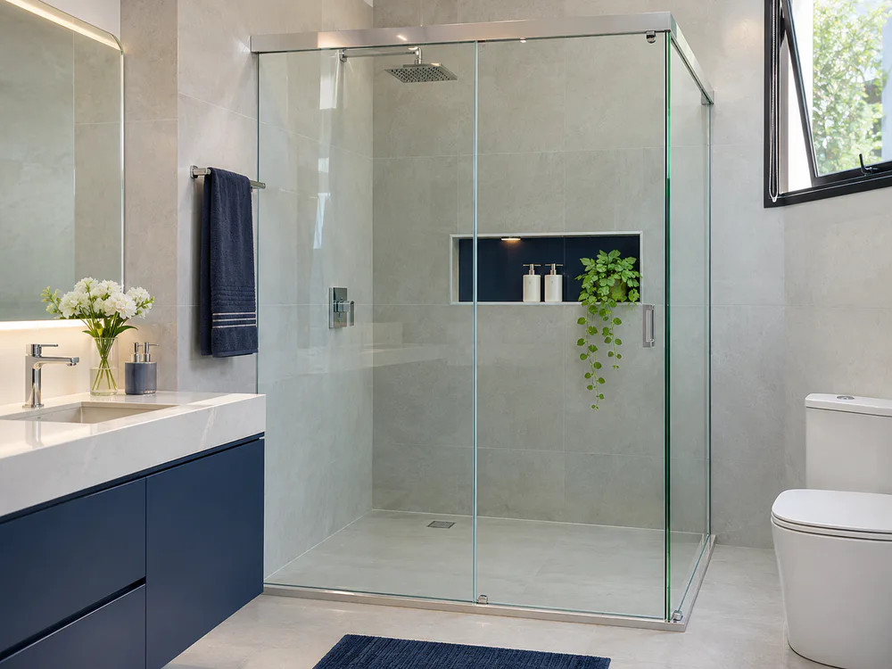
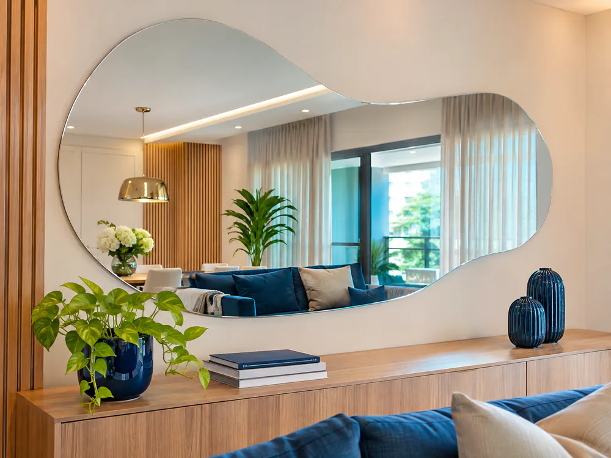
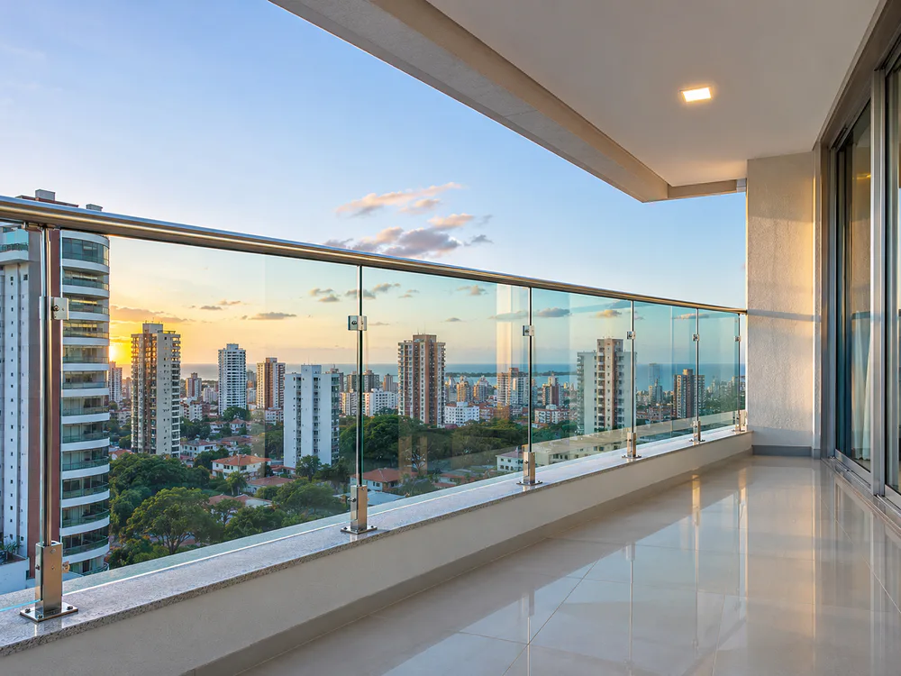
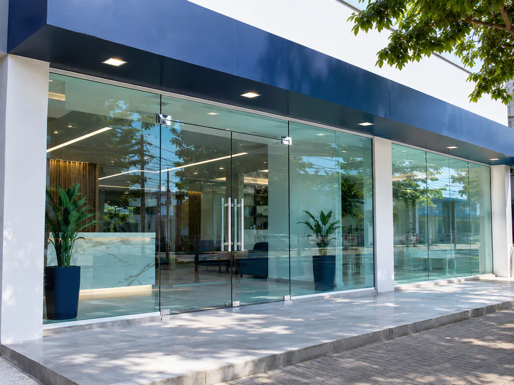
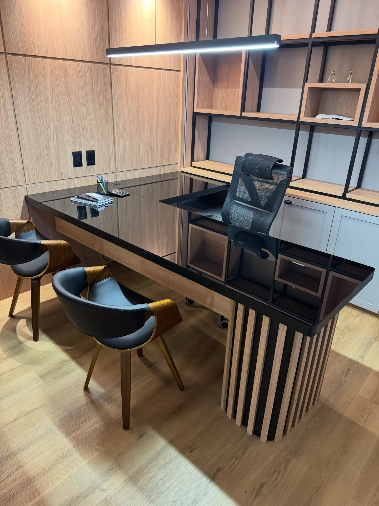

01PRATICIDADE & DESIGN
DOMINUS VIDRAÇARIA · FORTALEZA
Soluções em vidro e espelhos para valorizar espaços residenciais e comerciais, do projeto à instalação.

SOLUÇÕES EM VIDRO
Do banheiro à fachada comercial, cada projeto nasce para valorizar o espaço, a luz e a sua rotina.

01PRATICIDADE & DESIGN

02AMPLITUDE & LUZ

03SEGURANÇA & VISTA LIVRE

04IMPACTO & PRESENÇA

DOMINUS VIDRAÇARIA
A Dominus atende Fortaleza com soluções de vidro para residências, lojas, escritórios e ambientes de convivência. Cada pedido começa com uma conversa sobre medidas, uso do espaço e acabamento desejado.
COMO FUNCIONA
Um caminho simples para você entender a solução, aprovar o projeto e acompanhar a execução.
Envie medidas, fotos ou apenas explique o que deseja.
Orientação sobre configuração, acabamento, ferragens e medidas.
Projeto preparado sob medida, instalado e conferido no local.
DEPOIMENTOS
Espaço demonstrativo para depoimento real de cliente, mediante autorização da Dominus.
Espaço demonstrativo para relato de projeto comercial concluído pela equipe.
Envie sua experiência para adicionar uma avaliação autorizada nesta seção.
ORÇAMENTO INTELIGENTE
Responda três perguntas rápidas. No final, sua mensagem estará pronta para enviar pelo WhatsApp.
ATENDIMENTO LOCAL
Atendimento para projetos residenciais e comerciais em Fortaleza. Fale com a equipe para confirmar disponibilidade na sua região e enviar fotos do ambiente.
DÚVIDAS FREQUENTES
Informação clara para você tomar uma decisão segura e adequada ao ambiente.
A escolha depende das medidas, ferragens e configuração do banheiro. O vidro temperado é uma solução comum, e o projeto deve respeitar os requisitos técnicos aplicáveis.
Sim. A proposta deste modelo de atendimento é avaliar cada espaço para definir medidas, acabamento e solução adequados ao uso.
Você pode usar o formulário interativo acima ou falar diretamente pelo WhatsApp, enviando fotos e medidas aproximadas do local.
Sim. A Dominus apresenta soluções para residências, comércios, escritórios e áreas comuns de condomínios em Fortaleza.